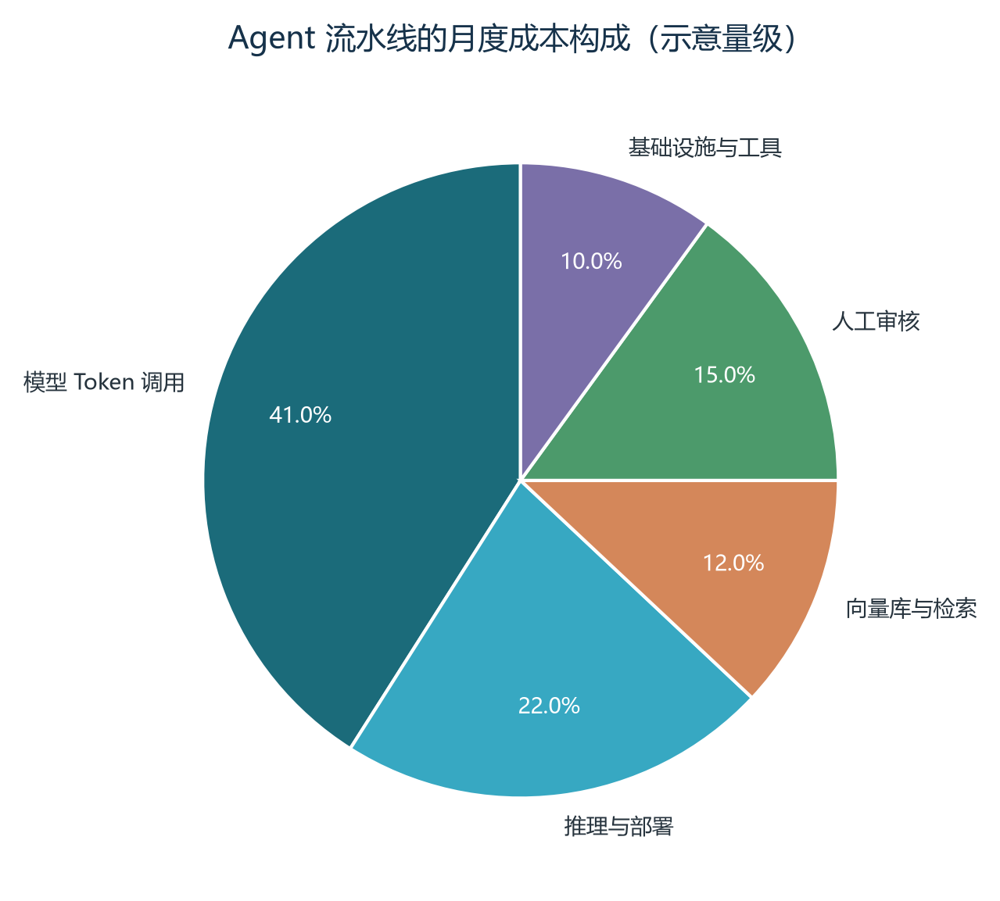
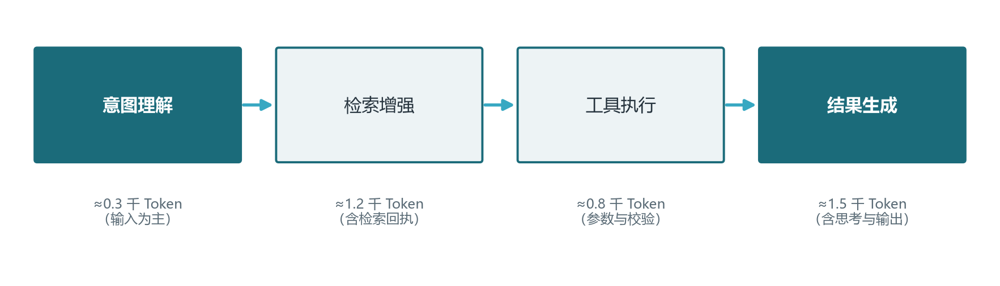
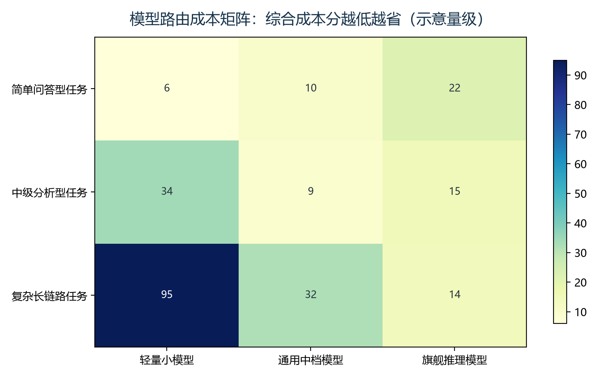
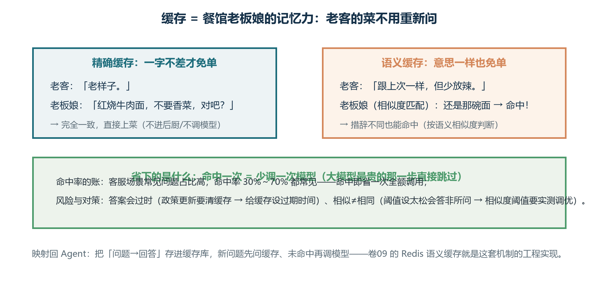
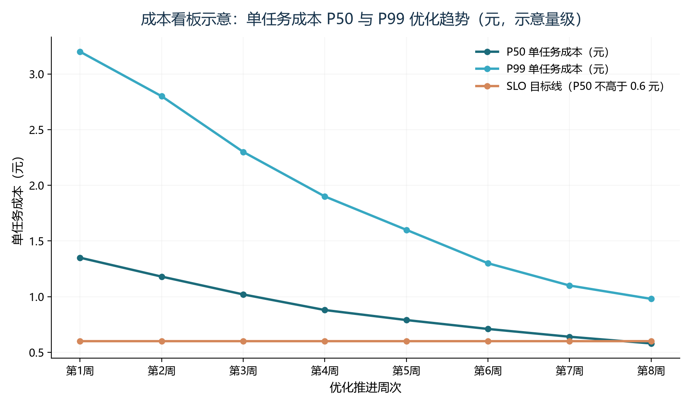

前言：当“贵”与“省”开始由数据说了算
欢迎回到《Agent 开发工程师修炼手册》。走到这一卷之前，我们已经用十几卷的篇幅解决一个问题：怎样让 Agent 会思考、会调用工具、会记忆、会协作，最终把复杂任务稳定地跑起来。卷十六把它送上了生产线，卷十七又为它补上了多模态的耳目。可如果你真的把一套 Agent 服务放上生产、接上计费，用不了几个星期就会撞上另一堵墙：模型确实在认真干活，账单却像失控的电梯一样只升不降。为什么一次明明只花了“几分钱”的对话，月底汇总时竟成了让人失眠的数字？这堵墙就是本卷的主题——成本工程（Cost Engineering）与 FinOps 实战。
行业里流传着一句玩笑：Agent 项目的第一次“生产事故”，往往不是服务宕机，而是账单宕机。这话听着夸张，背后却是一条冷静的规律：Agent 的成本不像传统软件的服务器那样看得见、摸得着，它藏在每一次你不曾留意的模型调用里——一次客服任务可能触发五到二十次模型调用，一次深度调研可能循环上百轮，而这些调用的单价，会随模型档位、输入输出比例、缓存是否命中上下浮动数十倍。更麻烦的是，Agent 的“聪明”恰恰来自把成本花在推理上：让它多想一步，答案可能更准，账单也按比例变得更厚。省钱与质量就像天平的两端，任何一端用力过猛，另一端都会立刻报复你。
因此，本卷不打算教你把 Agent 做到免费——那既不现实，也没有必要。我们要做的是四件事：第一，建立一套把 Token 消耗换算成真金白银的成本模型，让你对任何任务都能估算出量级正确的单价；第二，掌握缓存、路由、压缩这三张降本的核心杠杆，并理解它们各自的省钱机制与适用边界；第三，学会从用户、业务线、功能、模型四个维度做成本归因，用看板与 SLO 把“成本”变成可治理的工程对象；第四，沉淀一个成本与质量的决策框架，让你在“该省”与“不该省”之间做出可辩护的选择。学完本卷，你将是团队里那个能对着账单说出“这笔钱为什么值、那笔钱为什么能省”的人。
学完本卷，你将能够：
- 说清 Agent 任务成本的完整构成，区分模型 Token、推理部署、向量库、人工审核与基础设施五类支出，并解释它们为何随任务形态剧烈变化；
- 用“按步骤累计 Token、再乘以单价”的方法为任意任务搭建成本核算脚本，读懂输入、输出与缓存命中之间的价差逻辑；
- 判断并落地语义缓存、前缀缓存、路由分级与模型压缩四条省钱路径，并为每一条路径估算可度量的收益与代价；
- 设计一张覆盖用户、业务线、功能、模型四个维度的成本归因账本，定义单任务成本的 P50 与 P99、缓存命中率等看板指标与告警阈值；
- 用“关键路径不省、可离线尽省”的原则，配合用户配额、任务预算、全局熔断三层上限，做出可以拿给业务方评审的成本决策。
本卷与前序多卷强相关：卷四的思考预算、卷五的前缀缓存与批处理、卷六的蒸馏与量化、卷十五的成本归因看板，都是本章的重要前置，文中会逐处交叉引用，可按需回翻。要特别提醒的是：书中的价格、Token 数与成本金额全部是“示意量级”，目的是训练你的量级直觉，而不是让你背诵价格表——模型价格几乎以周为单位在变，但“输入比输出便宜、缓存命中更便宜、大模型更贵”这几条结构性规律长期稳定。代码示例以可读性优先，建议先读懂逻辑，再替换为真实计费数据运行。
第一章 为什么 Agent 的成本是个工程问题
几乎所有团队都是先撞了墙，才回头研究成本的。撞墙之前，大家默认“按量付费的大模型很便宜”，毕竟单次调用的价格确实低到可以用“分”做单位；撞墙之后，大家又容易走向另一个极端，把一切成本上涨都归咎于模型太贵，急着换小模型、开缓存、压上下文，结果质量崩了、返工更多，账单不降反升。这一章先把账本摊开，回答一个问题：Agent 的成本到底由什么构成，它凭什么能和“工程问题”这四个字挂上钩。
1.1 一次“几乎免费”的对话，为何月底会吓人一跳
先看一笔朴素的计算。假设你接入了一个通用对话模型，它的价格是每百万输出 Token 约 20 元（示意量级）。用户问一句“我的订单到哪了”，模型输出一段 300 字的答复，大约消耗 400 个输出 Token，折算下来不过 0.008 元——不足一分钱。这看起来的确是“免费的午餐”。可如果这不是聊天机器人，而是带检索、带工具、带记忆的 Agent，情况就完全不同了：它要先判断这句话需要调用订单查询工具，再检索用户上下文，然后调用订单接口，把接口返回的结构化数据塞回上下文，最后才生成给用户看的自然语言答复。整个过程可能要调用模型三到五次，输入侧还要反复携带系统提示词、工具说明与历史记录。
假设每次模型调用平均消耗 2000 个输入 Token 与 300 个输出 Token，四轮下来就是 8000 输入与 1200 输出，按输入每百万 6 元、输出每百万 20 元计（示意量级），单次会话成本约合 0.072 元。若这家客服产品每天处理一万次这样的会话，一天的模型支出就是七百多元，一个月超过两万元——而这还只算了模型调用这一项，没有算向量库、检索 API 与人工兜底。同样的单价，乘以任务链的长度、再乘以调用量，就把“一分钱”放大成了“一笔预算”。这告诉我们一个关键事实：Agent 的单位计价对象不是“一次对话”，而是“一次任务”——而一次任务的成本，等于任务链上每一环成本之和。
更大的问题是，工程师往往只盯着“单价”做决策，却对“用量”毫无概念。菜单上最贵的牛排按克计价，点的人多了照样贵得离谱；Token 也一样，真正的成本杀手从来不是单价最高的那一次调用，而是被反复执行、反复空转、反复重试的“量”。同一个问题问十次、同一段文档被重复塞进上下文十次、同一次失败被重试三次——这些量累积起来，才会让月底账单“吓人一跳”。因此，建立成本意识的第一步，是把目光从“这一行代码贵不贵”移到“这一整条任务链每个月要跑多少次、每次浪费多少”上来。这正是下一小节要拆解的账本结构。
1.2 成本构成全景：五条支出线一起算
一张完整的 Agent 月度成本图，至少包含五条支出线，下图给出了它们在一条典型流水线上的占比示意（数据为示意量级，不同业务差异极大）。第一条是模型 Token 调用，也就是每次调用模型时按输入、输出与缓存命中实际计费的部分，通常占四成上下；第二条是推理与部署，包括自建 GPU 集群的算力摊销、推理引擎运维，或调用云 API 时的网关与预留实例成本；第三条是向量库与检索，包括文档切分时的 Embedding 计算、向量索引的存储与查询、以及重排序接口的调用费用；第四条是人工审核，即高风险动作落地前的审批、疑难任务的人工兜底与质量抽检；第五条是基础设施与工具，包括消息队列、对象存储、日志与追踪平台、外呼邮件等第三方 API 的固定开销。

读这张图时，请留意两件事。其一，不同业务的饼图形状可以天差地别：一个以文档问答为主的 RAG 客服，向量库与检索的占比会显著抬高；一个深度调研类产品，模型 Token 调用可能占到七成以上；一个处理合同、转账等高风险动作的系统，人工审核会是绝对大头——在某些金融场景里，人审成本甚至超过全部机器成本。形状差异意味着成本优化的抓手不同：只盯着“模型贵”去换小模型，对一个主要烧在人工审核上的业务毫无帮助。因此成本工程的起点永远不是找“最便宜的模型”，而是先画自家的成本饼图。
其二，这张饼图的比例并非固定不变的“出厂设置”，而是随工程决策被反复重塑的“结果变量”。你选择了自部署还是云 API，决定了第一条线在账上如何记账；你做不做缓存，决定了第一条线内部有多少钱其实可以被“赚回来”；你把多少任务交给人工，决定了第四条线的肥瘦。用一句通俗的话说：传统软件的成本是“买设备”的成本，买完就大致定死了；Agent 的成本是“连续运营”的成本，每天都会随着工程动作重新分配。这也解释了为什么本卷坚持认为成本是工程问题——因为它几乎完全由你写的代码、做的选型与定的流程决定。
1.3 与传统 SaaS 的三点本质差异
做过传统 SaaS 的工程师对成本管理的直觉通常是：搭一台服务器，看 CPU 与内存利用率，按用户数摊算基础设施成本，成本随时间缓慢波动。把这套直觉直接搬到 Agent 上，会在三个地方失灵，这正是表1-1 要对照说明的三点本质差异。
| 对比维度 | 传统 SaaS 应用 | Agent 应用 |
|---|---|---|
| 计价单位 | 按 CPU 时间与存储量 | 按 Token 数量与调用次数 |
| 成本峰值 | 随流量线性，可预测 | 单任务成本波动可达数十倍 |
| 隐性浪费 | 空闲资源、超配实例 | 重复计算、无效重试、冗余上下文 |
| 质量与成本关系 | 基本无关 | 直接耦合，省钱往往损质量 |
| 观测粒度 | 实例级监控即可 | 需拆到单次调用与单步归因 |
| 容量规划 | 按 QPS 与并发估算 | 须叠加 token 预算与长尾分布 |
差异之一，是成本从“容量计价”变成了“用量计价”，且用量本身不可预测。传统 SaaS 买了一台机器，无论跑满还是闲置，成本大体固定；Agent 每次调用的费用由输入输出 Token 决定，而输入输出量又由模型当时的决策决定——同一个任务，今天走三步完成，明天可能绕五步，成本立涨六成。这意味着成本不再是部署时定死的常量，而是一个需要实时观测、动态约束的变量，任何“按上个月的用量拍脑袋定预算”的做法都会失效。
差异之二，是成本与质量被绑在了同一根轴上。传统软件的服务器利用率与用户感受到的质量几乎无关，你可以为了省钱把实例缩到刚好够用而不伤体验；Agent 却每多花一分钱，往往都是因为想多让模型想一步、多检索一轮、多调用一个工具去把答案做对。这种耦合在推理模型上体现得最极端：思考预算从低档升到高档，质量提升的同时成本可能翻几倍到十几倍（卷四对此有完整分析）。于是“成本优化”不再是单纯的减法，而是一道“在质量可接受的前提下最小化花费”的约束优化题——本卷第六章的决策框架正是为此设计。
差异之三，是成本存在严重的“长尾任务放大”效应。传统 SaaS 的成本分布大致均匀，一万个用户每人产生一份成本；Agent 的成本遵循幂律——少数复杂任务、少数刁钻用户、少数失控循环，可能吞掉账单的大头。一个陷入死循环的研究型 Agent 一晚上烧掉的钱，可以抵几千个普通用户的日成本。这条差异决定了 Agent 的成本治理必须从“管平均”走向“管长尾”：要盯 P50（中位数）更要盯 P99（极端值），要为单个任务、单个用户设置预算上限，而不能只做月度总量的同比环比。本卷第五章的 SLO 与熔断设计，正是冲着这条长尾去的。
1.4 两个 Agent 特有的成本陷阱：长尾放大与质量-成本张力
除了与传统 SaaS 的差异，Agent 还有两个容易让人翻车的特有陷阱，值得在开篇就点透。第一个陷阱是“看不见的成本复利”。传统应用的一次请求对应一段可数的计算，Agent 的一次任务则是一棵会自我生长的调用树：每多一次工具调用，就要多一次携带工具说明的模型调用；每多一轮循环，前面所有历史都要重新计费一遍；每多一次失败重试，此前付出的全部 Token 都成了沉没成本。这些成本相互叠乘，肉眼几乎无法追踪——除非你把全链路追踪接上（卷十五），否则你看到的只有月底那一行总数。
第二个陷阱是“省钱动作的副作用延迟”。换一个小模型，当下立刻省钱，但回答质量下降导致的返工、转人工、客诉可能三周后才在指标里露出獠牙；开一个语义缓存，当下立刻省钱，但如果缓存撞了语义近邻、把相似但不相同的问题当成同一个问题回答，业务事故可能直到某天被用户当场抓包才暴露。成本的账往往当周兑现，质量的账却要按月偿还，这种时间差让“先省了再说”看起来总是很划算，直到它不再划算。因此，本卷反复强调一个工程纪律：任何省钱改动都必须配评估门禁与灰度放量（第六章），把副作用显性化，而不是让它在暗处发酵。
有了这张全景账本，接下来的问题就顺理成章：怎么把“一次任务花多少钱”算清楚？下一章，我们进入本卷的核心工具——成本模型。从读懂计价单开始，逐步搭建单任务成本公式，再用量例与路由矩阵把抽象公式变成能指导选型的直觉。
第二章 建立成本模型：把看不见的 Token 变成算得清的账
成本优化的前提是成本核算，成本核算的前提是有一套说得清的口径。所谓成本模型，就是把“这次任务烧了多少 Token、该付多少钱”这件原本模糊的事，变成一行公式、一段脚本、一张表。本章从三个层次搭建这套模型：先读懂模型厂商的计价单，再把计价单翻译成单任务成本公式，最后用一个完整的客服任务算例与一张路由成本矩阵，让你对“什么任务该用什么模型”建立数字层面的直觉。
2.1 读懂计价单：输入、输出与缓存命中的价差
几乎所有模型厂商的计价单都遵循同一套结构：按 Token 计费，且把计费段分成至少三类。第一类是输入 Token（也被称为提示词 Token 或上下文 Token），即你发给模型的全部内容——系统提示词、历史对话、检索结果、工具说明都算输入；第二类是输出 Token（或补全 Token），即模型生成的内容，包括最终答案、工具调用参数，甚至推理模型的“思考过程”；第三类是缓存命中读取，即模型服务商发现你的输入前缀与近期请求完全相同、直接复用缓存计算时的计费，通常只有常规输入价的十分之一到二十分之一。表2-1 给出了三档典型模型的价格结构示例，所有数值均为示意量级，请把它当作理解结构用的标尺而非行情表。
| 计费段 | 轻量档 | 通用档 | 旗舰推理档 |
|---|---|---|---|
| 输入 Token | 1 | 6 | 30 |
| 输出 Token | 4 | 18 | 90 |
| 缓存命中读取 | 0.05 | 0.4 | 3 |
| 内部思考 Token | 按输出计费 | 按输出计费 | 按输出计费 |
这张表至少教会我们三件事。第一，输出远比输入贵。在通用档里输出单价是输入的三倍，在旗舰推理档里同样是三倍——所以“让模型多说”比“让模型多听”更烧钱，压缩模型输出长度（例如要求精简回答、用结构化格式代替长篇叙述）是立竿见影的省钱手段。第二，缓存命中是真正的价格洼地。同一段前缀从“按 6 元重新计算”变成“按 0.4 元直接读取”，成本差十五倍，这正是后面第三章要讲的缓存技术能省钱的底层依据。第三，推理模型的思考过程按输出价计费，而且思考量可以远超最终答案——这就是为什么“让推理模型想得太多”会成为成本黑洞，也呼应了卷四思考预算工程的意义。
还有一个容易忽略的细节：Token 并不是“一个字等于一个 Token”。中英文、代码、数字的分词方式不同，中文一般一字一至二 Token，英文单词平均约 1.3 Token，代码与特殊符号的消耗更难以肉眼估算。厂商返回的 usage 字段里的 token 数是唯一权威口径，任何成本脚本都应直接读取它，而不是自己按字数去猜。这个细节解释了为什么“我感觉没发多少字”和“账单为什么这么高”之间，经常存在令人困惑的落差。
2.2 单任务成本公式：从“一次调用”到“一次任务”
有了计价单，就可以搭建单任务成本公式。任何一次 Agent 任务，无论多么复杂，都可以展开成有限个步骤：意图理解、检索、工具调用、生成、失败重试、人工交接……每一“步”本质上都是一次（或一组）模型调用，于是单任务成本可以写成求和式：总成本等于所有步骤的“输入 Token 乘输入单价、加输出 Token 乘输出单价、加缓存命中 Token 乘缓存单价”之和，再把单位从“每百万 Token”折算成元。用一段不到三十行的 Python 脚本即可落地，代码如下。
# 单任务成本核算脚本（示意）：按步骤累计 Token 并乘以单价
PRICE = { # 元/百万 Token，参考表2-1 通用档的示意量级
"input": 6.0, "output": 18.0, "cache": 0.4,
}
def step_cost(in_tok, out_tok, cache_tok=0):
"""单步（一次模型调用）的成本，单位：元"""
return (in_tok * PRICE["input"]
+ out_tok * PRICE["output"]
+ cache_tok * PRICE["cache"]) / 1_000_000
def task_cost(steps):
"""任务 = 若干步骤之和；steps 元素形如 dict(in=,out=,cache=)"""
return sum(step_cost(s["in"], s["out"], s.get("cache", 0))
for s in steps)
# 一次“改收货地址”客服任务的四步主链路（Token 数为示意量级）
steps = [
{"in": 300, "out": 120, "cache": 2200}, # 意图理解：固定前缀命中缓存
{"in": 2400, "out": 300}, # 检索订单：注入订单数据
{"in": 1500, "out": 250}, # 工具执行：修改地址
{"in": 800, "out": 600}, # 结果生成：最终答复
]
print(f"本次任务成本 ≈ {task_cost(steps):.4f} 元（约 {task_cost(steps)*100:.1f} 分）")这个脚本的妙处在于它把“看不见的成本”变成了“看得见的变量”。只要你在每次模型调用后记录真实的 Token 消耗（厂商 usage 字段），再把脚本中的估算值替换成真实值，它就从教学工具变成了生产可用的单任务成本计量器——这也是第三章以后一切优化的标尺。脚本本身有三点工程细节值得注意：一是必须区分缓存命中与新鲜输入，否则会系统性高估成本，导致“以为很贵所以不敢用缓存”的误判；二是要把“失败重试”作为独立步骤计入，因为重试意味着前序步骤的成本全部沉淀；三是这个公式只覆盖模型调用这一条线，检索 API、人工成本需要另立公式，最终汇总到第一章那张全景饼图上。
公式虽小，却能澄清一个广泛存在的误区：很多人以为“贵模型做什么都贵、小模型做什么都便宜”，于是简单粗暴地全局换模型。实际上，一次任务的成本主要取决于两个量：累计 Token 数（尤其输入侧）与单价。如果任务本身极短，旗舰模型与轻量模型的绝对差价可能只有几分钱，此时为了省钱而牺牲质量是捡了芝麻丢西瓜；反之，如果任务极长，即使单价只有十分之一的轻量模型，累计起来也会是一笔可观的开销。把账算到“步骤级”，你才能看出到底是“单价”在吃钱，还是“用量”在吃钱。下面用一个完整算例把这句话落到实处。
2.3 一次客服任务的成本拆解
我们以电商客服最常见的“修改收货地址”任务为例，完整走一遍成本拆解。假设系统使用表2-1 的通用档模型，价格为输入每百万 6 元、输出每百万 18 元、缓存命中读取每百万 0.4 元（均为示意量级）。下图把主链路的四个阶段画成了一条流水线，各阶段的 Token 消耗量级也一并标注；总成本请以 2.2 节脚本的运行结果为准。

2.3.1 顺利的六步主链路
一个完全顺利的改地址任务大致长这样。第一步，用户说出诉求，系统把固定的系统提示词与工具说明拼进上下文后调用模型——这约 2500 个输入 Token 中，约 2200 个是每个用户每次会话都会携带的固定前缀，若服务商支持提示词缓存则按 0.4 元而非 6 元计费，这一笔就从约 1.5 分钱降到了 0.09 分钱。第二步，模型识别出需要查询订单，输出一个工具调用参数；订单接口返回该用户的订单列表，系统把结果作为新输入注入上下文，约 2400 个 Token。第三步，模型判断“该订单可修改”，继续输出修改动作，工具执行成功。第四步，模型依据结果生成给用户的确认话术，输出约 600 Token。把四步的输入输出累加，总成本约合 6 分钱——注意，其中大约四成花在了“携带上下文”的输入侧，而不是“生成答案”的输出侧。
这里有一个反直觉的结论：对多数 Agent 任务而言，成本的大头是“喂给模型的输入”，而不是“模型吐出的输出”。输入侧又分两部分：一部分是每次必须携带的、构成任务语义的检索结果与工具回执，这部分是“有效载荷”；另一部分是反复携带的系统提示词、过长的历史记录、被截断却仍占位的旧内容，这部分是“无效重量”。无效重量越少，单任务成本越低——这正是卷七上下文工程的成本意义所在。换句话说，提示词与上下文的工程优化，本质上就是一种成本优化，只是它穿着“质量优化”的外衣。本卷第四章会把这条线专门展开。
2.3.2 失败分支与人工兜底的成本放大
顺利的路径很便宜，但生产环境从不承诺顺利。同样是改地址，常见剧本是：用户试图修改的订单已经出库，按规则不可修改。Agent 第一步先查询订单，第二步尝试修改并收到失败回执，第三步才发现规则不允许，第四步转入工坐席处理。仅多出两轮“试错”模型调用，输入累计就从约 5000 个 Token 涨到约 8000 个，模型成本约翻倍到 0.11 元；更重的是人工兜底——坐席需要重新阅读对话、核实订单、给出解释，平均耗时约三分钟，按人力成本折算就是数元的开销，是模型成本的几十倍。而这还只是“一次失败”的成本，如果失败发生在深夜且转人工排队，用户重复发起同样的诉求，Agent 还会为每一次重复诉求重新烧一遍同样的钱。
把这个例子推广开，就得到一条成本工程的核心不等式：一次失败任务的成本，通常远高于一次成功任务。失败的成本包括三部分——前序步骤的全部沉淀 Token、重试/转人工带来的增量成本、以及失败引发的用户重复诉求。这意味着，与其在成功路径上锱铢必较地省几分钱，不如在失败路径上多花功夫：把规则前置校验（出库状态、地址格式）放到工具执行之前，让模型少撞几次南墙；为“大概率失败”的诉求设计最短路径，直接转人工而不是让 Agent 试错三次再转。省钱的最大杠杆往往不在顺风时，而在逆风时。
2.4 模型路由成本矩阵：贵模型有贵的道理，小模型有省的代价
算清了单任务成本，下一个绕不开的问题是：任务这么多，该让谁去干？直觉答案是大模型干难活、小模型干简单活，但“难”与“简单”如何量化？这里引入一张工具：模型路由成本矩阵。它的横轴是任务复杂度（从简单问答到长链路推理），纵轴是模型档位（轻量、通用、旗舰推理），每个格子填入一个“综合成本分”——把直接的 Token 花费与“模型能力不足导致的返工期望成本”加在一起，分越低越好。下图给出了一张示意矩阵，颜色越深代表综合成本越高，读者应能读出它的对角线规律。

2.4.1 用“返工期望成本”给矩阵填数
矩阵里最容易填错的就是“综合成本分”。直观想法是填单价：旗舰模型单价高，填大数；轻量模型单价低，填小数。但这样填出的矩阵会误导决策——它漏掉了“能力不足的代价”。设想一个需要多步推理的复杂任务：用轻量模型执行，单价很便宜，但正确率可能只有六成，四成失败需要重试或转人工，一次失败的成本是单次成功的数倍；把失败的期望成本摊进单次任务，轻量模型的“真实综合成本”反而可能高于旗舰模型。返工期望成本的计算方法很简单：单次成功成本乘以（失败率除以成功率）再乘平均每次失败的额外开销。它的意义是让“便宜但总返工”与“贵但一次成功”在同一个坐标系里比较。
填好综合成本分之后，矩阵会呈现出一个教科书式的对角谷底：对简单任务，轻量模型综合成本最低；对中等复杂度任务，通用模型最划算；对复杂长链路任务，旗舰推理模型虽然单价最贵，却因为一次成功率最高而综合成本最低。三个“最优档”连成一条从左上到右下的对角线。路由的本质，就是让每个任务落在自己的最优格子里：简单问题不劳烦旗舰模型空转，复杂问题也别指望小模型省钱——在它能力边界之外，它省下的每一分钱都会在返工里加倍还回去。
2.4.2 从矩阵到路由规则：衔接卷四的思考预算
把矩阵变成可运行的路由规则，工程上有四个层次，从粗到细。第一层是场景硬路由：让开发者在代码里指定某类功能固定用某档模型，最稳定但最僵硬。第二层是复杂度探测路由：模型或规则先判断任务复杂度（长度、工具需求、历史失败率），再决定用哪档模型，这是大多数团队的首选落地方式。第三层是动态升级：先用便宜的档位试答，通过校验（如答案结构是否完整、是否包含置信度信号）就放行，不通过就升级到更贵的档位再答一次——用“保底思维”换“大概率省钱”。第四层是推理模型内部的思考预算调节：同一个旗舰模型，通过 reasoning_effort 或 thinking budget 参数控制思考量（卷四专章），相当于把矩阵里“旗舰档”这一行再切出若干子档位。
需要提醒的是，路由规则的收益必须用真实流量验证，而不能只靠矩阵臆断。矩阵给的是先验估计，真实世界里每个格子里的失败率要用卷十五的评估体系持续测量；路由本身还会引入新的成本（复杂度判断也要花 Token）与新的失败模式（误判复杂度导致选错模型）。因此成熟的做法是：矩阵定方向、灰度实验定阈值、评估集守底线——先让一小部分流量走新路由跑一周，确认综合成本与质量双指标都不劣化，再逐步放量到全量。本章建立的成本模型、算例与矩阵，将作为第三、四、六章反复引用的“度量底座”。
第三章 成本优化三板斧：缓存、路由与压缩
建好成本模型之后，就可以讨论省钱的具体动作了。业界实践高度收敛为三个方向，本书称之为“成本优化三板斧”：缓存、路由与压缩。三板斧的分工清晰：缓存解决“同一件事重复算”的浪费，路由解决“简单事用了贵模型”的错配，压缩解决“模型本身太大、跑起来太贵”的负担。三者作用在成本公式的不同位置上，因此可以叠加使用，收益相乘。
3.1 三板斧总览：省钱不是抠门，是减少无效劳动
在进入细节之前，先给三板斧一个统一的视角：它们本质上都在减少“无效劳动”。缓存省掉的是重复劳动——同一个用户反复问同一个问题，第一次算过的东西第二次不应该再付全价；路由省掉的是错配劳动——简单任务不该让旗舰模型用思考预算“高射炮打蚊子”；压缩省掉的是冗余劳动——模型如果能用四分之一的显存和算力跑出同等质量，同样的硬件就能服务更多请求。这三板斧互不冲突：一个复杂客服系统完全可以先做前缀缓存，再做复杂度路由，最后把高频的简单子任务切换到一个蒸馏后的小模型上，三层叠加的省钱效果是乘法的，而非加法的。
| 杠杆 | 省钱机制 | 主要代价 | 典型落地场景 |
|---|---|---|---|
| 缓存 | 消除重复计算 | 存储开销与命中率维护 | 多轮对话、常见问题、文档问答 |
| 路由 | 消除模型错配 | 复杂度误判与评估成本 | 意图差异大的混合流量 |
| 压缩 | 降低单位成本 | 前期成本与质量风险 | 高频量大、自部署场景 |
三板斧各有一个共同的“隐性成本”值得在动手前认清：它们都引入了新的复杂度和新的风险点。缓存可能返回过时答案，路由可能误判复杂度，压缩可能损伤精度——每一项都可能把省下的钱以“质量事故”的形式还回去。因此本书的建议是把三板斧看作“带评估的改造”，而不是“一锤子买卖的开关”：每一个动作都要能回答“省了多少、质量有没有变、怎么回滚”。下面三节分别深入每一板斧。
3.2 缓存：让重复计算只发生一次
3.2.1 语义缓存与精确缓存
缓存的第一种形态是“答案级缓存”：把已经算过的完整问题与答案存起来，下次遇到相同问题时直接返回，不再调用模型。它又分两个层级。精确缓存最简单——对请求做规范化哈希，完全相同的输入直接命中，适用于系统提示词固定、用户请求高度模板化的场景；它的命中率天然有限，因为自然语言几乎不会两次说得一模一样。语义缓存更进一步：把用户问题做向量化，用余弦相似度判断“是不是同一个意思”，相似度超过阈值就复用历史答案，适用于 FAQ 与知识问答场景——用户问“怎么退款”和“退款流程是什么”，在向量空间里距离很近，应当命中同一条答案。
图3-1 用餐馆的比喻把两种缓存讲清：精确缓存是「老样子」三个字就能上菜（一字不差）；语义缓存是「跟上次差不多但少辣」也能对上（意思一样就算命中）。命中一次，最贵的模型调用就整个跳过——这是三板斧里投入最小、见效最快的一条。

语义缓存的两头各有一个坑，需要专门提醒。一头是“误命中”：相似度阈值设得太松，把两个看似相近实则不同的问题当成同一个——比如“支持哪些支付方式”与“支持哪些配送方式”，语义相近但答案不同，命中后用户会得到答非所问的结果。另一头是“命中率虚高”：评估语义缓存时若只用重复改写后的同一问题测试，命中率自然漂亮，真实流量一进来就原形毕露。正确的姿势是用真实用户流量回放评估，并且为缓存答案打上“生成时间”与“知识版本”，知识库一旦更新就要按策略失效或降权。缓存是有保质期的知识，不是可以永久保鲜的罐头。
3.2.2 前缀缓存：为多轮对话的“公共前缀”打折
缓存第二种形态是“前缀缓存”，也叫提示词缓存，它不缓存答案，而是缓存模型计算过程中的 KV Cache。原理藏在卷五的推理引擎里：模型对一段输入的计算结果（注意力机制的键值对）可以按前缀复用。多轮对话里，第 N 轮请求 = 第 N-1 轮全部历史 + 新增的这一轮内容，前 N-1 轮的 KV Cache 已经算过，若服务商允许缓存命中，只需按“缓存读取”的超低价为新输入付账，而不是按常规输入价把全部历史重算一遍。厂商文档里的 prompt caching、automatic prompt caching 就是这套机制的商品化形态，主流推理引擎 vLLM 等也支持前缀缓存（卷五有专节）。
前缀缓存的省钱效果在“长历史、多轮次”的场景里极其可观，但有一个前提：前缀必须稳定。如果每一轮请求都在系统提示词里拼入动态内容——当前时间戳、随机 ID、实时价格——缓存的前缀就被打断，命中率骤降。工程上的做法是把提示词分成“静态区”与“动态区”：所有固定不变的内容（系统提示、工具说明、历史对话）排在前面保持稳定，动态内容尽量放在尾部或单独一段。这里有一个几乎零成本的优化技巧：即便只是把“时间”从提示词顶部挪到底部，都可能让前缀命中率发生数量级的改变——因为对很多请求而言，时间戳是唯一变化的部分。缓存命中率因此成为本卷第五章要上墙的核心看板指标。
3.2.3 命中率工程：缓存是把双刃剑
无论哪种缓存，收益都取决于一个指标：命中率。命中率的工程，一半靠架构（缓存放哪里、如何判重），另一半靠运营（实时统计、命中率告警、失效策略）。下面给出一个生产可用的命中率统计脚本骨架，它的输入是每次调用的日志记录，输出是命中率与折算出来的省钱金额——把“缓存到底省了多少”变成每周可以上汇报的数字。
# 缓存命中率统计与省钱测算（示意脚本）
PRICE = {"fresh_input": 6.0, "cache_read": 0.4} # 元/百万 Token
def analyze_cache(logs):
"""logs: [{hit: bool, tokens: int}]，统计命中率与节省金额"""
total = hit = 0
fresh_tok = cached_tok = 0
for r in logs:
total += 1
if r["hit"]:
hit += 1
cached_tok += r["tokens"]
else:
fresh_tok += r["tokens"]
hit_rate = hit / total if total else 0.0
# 命中的 token 若按常规输入价重算，减去缓存读价，即省下的钱
saved = cached_tok * (PRICE["fresh_input"] - PRICE["cache_read"]) / 1_000_000
return {"命中率": round(hit_rate, 3), "缓存Token": cached_tok,
"新鲜Token": fresh_tok, "约省金额(元)": round(saved, 2)}
demo = [{"hit": True, "tokens": 2200}] * 42 + [{"hit": False, "tokens": 2400}] * 58
print(analyze_cache(demo)) # 示意：命中率 42%，计算省钱金额命中率并非越高越好，这是缓存最容易踩的认知误区。如果为了把命中率从八成顶到九成五，而把语义缓存的相似度阈值放到极松，误命中带来的错误答案会侵蚀整个系统的可信度——省下的几分钱，会被一次错误答复引发的客诉与返工成倍吞掉。健康的命中率工程有三条基线：第一，按“问题类型”分别统计命中率，FAQ 类任务命中率应明显高于长尾推理类任务，混在一起看会掩盖问题；第二，为缓存答案设计失效机制，知识变更或模型升级后要有主动失效通道；第三，把命中率与“答案被采纳率”“转人工率”放在同一张看板上，防止“命中率好看、体验变差”的虚假繁荣。
3.3 路由：按任务复杂度分级，把贵模型留给难题
第三章谈缓存把“重复”消灭了，第二板斧解决的是“错配”：让简单任务别再占用贵模型。上一章 2.4 节的矩阵给出了路由的方向——任务复杂度与模型档位最优搭配呈对角线关系，本节的工程问题是如何把这条对角线落成线上规则。最朴素的路由触发器是规则匹配：命中“查余额、改密码”等高确定性意图走轻量档，命中“分析、对比、规划”类意图走旗舰档。更精细的做法是先用轻量模型做意图分类（或直接根据工具需求清单判断），再让复杂度决定档位。这条思路在卷四的思考预算工程里已经以“分级推理”的形式出现过：先 low 档试答、校验不通过再升级，本质就是对“旗舰档”内部再做一次成本路由。
路由的省钱账要算得比表面复杂。一方面，路由本身要花成本——意图分类要调用一次轻量模型，复杂度误判可能造成“该贵的没贵”（质量下降）或“该省的没省”（成本白付），这两类误判的成本都要摊进路由收益里。另一方面，路由最大的收益常常不在“模型差价的直接节省”，而在“把旗舰模型的吞吐让给了真正需要它的任务”——当贵模型有并发配额上限或 GPU 稀缺时，把简单任务请出旗舰队列，等同于在不加硬件的前提下提高了高难任务的可用容量。很多团队只算前者，低估后者，导致路由改造的 ROI 在评审时被系统性低估。
最后给一条路由实战经验：路由规则宁可保守，不要激进。先只把“最确定简单”的任务切到便宜档，观察评估集上的成功率与用户反馈，再逐步扩大切分范围；不要一上来就让规则系统“智能地”决定所有任务的档位——路由本身的失败模式（误判、抖动、雪崩）会让你分不清省钱与事故之间的界线。好的路由是慢慢长出来的，不是一步到位的。
3.4 压缩：蒸馏与量化在成本侧的收益模型
第三板斧作用于模型本体：让模型更小、跑起来更便宜。卷六已经系统讲过量化的位宽、PTQ 与 QAT、蒸馏与剪枝，本节从成本工程的角度补上它的“收益模型”，回答两个问题：压缩到底能省多少？省下来的钱值不值得付出那些代价？压缩的两条主力路线，收益模型并不相同。量化（把权重从 FP16 压到 INT4 等）几乎不改变模型的能力结构与生成质量，主要省的是显存与推理时的算力带宽——同样的 GPU，量化后可以装下更大的模型或服务更多并发，单位 Token 成本可降 60% 到 80%（卷六给出过详细账本）。蒸馏则完全不同：用一个高质量的大模型当“老师”，训练出一个能力接近但参数小得多的“学生”模型，学生模型的每一步推理都更便宜，但它需要一次性付出可观的训练成本，并且能力会随蒸馏目标而有选择地缩水。
用成本工程的语言说，量化是“改部署不改模型”，收益模型简单直接——一次性付出校准与验证的成本，之后每个 Token 都永久打折，几乎不存在质量悬崖；蒸馏是“换模型要重训”，收益模型类似一次固定资产投入——训练与验证的前期成本要用后续每个 Token 的节省来摊销。因此决策规则也清晰：如果任务是高频、量大、语义稳定的（例如内部知识问答、意图分类），值得投资蒸馏，把摊销期拉短；如果任务是长尾、多变的，量化是更稳妥的默认选项，因为它不把宝押在“学生模型能否覆盖未知任务”上。当两者叠加（先蒸馏出小模型，再对小模型做量化）时，收益相乘，但风险也相乘，必须用卷六的组合评估流程兜底。
压缩还有一个常被忽略的 Agent 特有视角：Agent 模型不仅要“答得对”，还要“叫得动工具、走得完流程”。量化的精度损失在纯对话上可能无感，但可能让工具调用的 JSON 输出出现格式错误，让结构化抽取漏字段——这些失败会以“重试”的形式把省下的成本再花出去。卷六在 Agent 特殊场景中给过同样的提醒。因此压缩路线的验收标准不是“困惑度掉了多少”，而是“在自家评估集上的任务成功率掉了多少”，以及“失败率的上升会不会抵消压缩省的每一分钱”。这条验收标准，正是第六章评估门禁的一部分。
第四章 Agent 场景的专项省钱：把流走的钱捞回来
前三章的钱省在“架构”上，这一章的钱省在“场景”里。同样的架构，运行在多轮对话、工具调用、失败重试、长任务这些 Agent 特有的执行形态里，会出现几类教科书不会写、账单却天天在记的浪费模式。这些模式单个看都是小钱，乘上每日的任务量就是可观的月度支出。本章把它们逐个挑出来，讲清机理与对策。
4.1 多轮对话的成本陷阱与上下文裁剪
第一个场景陷阱是多轮对话的“历史复利”。很多实现会朴素地把整段对话历史原样拼进每一轮请求，于是第 20 轮请求的输入里躺着前 19 轮的完整记录。假设每轮双方累计新增约 400 个 Token，第 20 轮请求的输入就是约 8000 个 Token——而其中真正服务于本轮决策的，可能只有最近三到五轮。更糟的是，如果中间某轮发生过一次检索，把几千 Token 的检索结果原样留在历史里，那么此后每一轮的输入都在为这段早已消费完的信息付费。上下文越长，每轮输入越贵，多轮对话的成本曲线会从线性悄悄变成近似平方。
对策是上下文裁剪，卷七与卷十一的记忆系统提供了完整工具箱，这里从成本角度给出三条优先级最高的规则。第一，历史分级：最近的原始轮次、较早的轮次压缩成摘要、再早的只保留结论与状态，让输入长度随轮数增长从线性退化为对数。第二，中间结果即用即弃：检索结果、工具回执在消费完、提炼成结论之后，就从上下文中移除或压缩，避免“用过一次的信息反复付费”。第三，状态外置：把需要长期保留的业务状态（订单号、用户意图、已确认字段）写入结构化记忆或数据库，而不是靠对话历史携带——让上下文只装“模型决策需要的信息”。这三条规则既优化质量（减少无关信息干扰），也优化成本，是典型的“一体两面”。
4.2 工具调用冗余与去重
第二个场景陷阱是工具调用层面的重复劳动。Agent 的每一次工具调用，都伴随着一次携带工具说明与参数的模型调用；当工具调用发生冗余时，这份钱就白花了。冗余的典型形态有三类。第一类是重复检索：多轮对话里用户反复询问相关细节，Agent 每次都重新检索同一段文档，而不是把首次检索的结果在后续轮次中复用或缓存——对策是给检索结果打上会话级缓存，同会话内相同查询直接取历史结果。第二类是并行工具的串行化浪费：两个互不依赖的查询（比如同时查天气与查航班）如果被模型拆成两次串行调用，就多付了一次重复携带上下文的钱——对策是在工具层显式声明并行能力，让模型一次发起多个工具调用（卷十三的多智能体与编排也有此实践）。
第三类冗余最隐蔽，也最常见：工具结果“原样堆砌”。模型调用一个返回了上万 Token 数据的接口，Agent 把这上万 Token 原样注入上下文，只为回答一个“总额是多少”的问题。对策有两层：在接口侧用参数裁剪返回字段（只取需要的列），在 Agent 侧让模型先对工具结果做结构化抽取再使用。这一条与 4.1 节“即用即弃”是同一种思想的两个侧面：工具结果进入上下文之前，先问一句“模型真的需要这全部内容吗”。很多 RAG 与工具链里，“检索到了但用不上”或“用了但只用了十分之一”的 Token 浪费，往往能占到输入侧成本的三成以上，是性价比最高的优化点之一。
4.3 失败重试的成本放大与重试预算
第三个场景陷阱是失败重试的“成本放大镜”。生产环境里，模型输出格式错误、工具接口超时、鉴权失败都是家常便饭，最常见的处理方式是重试——但每次重试都是一次全新的模型调用，都会把前序步骤的成本全部叠加一遍。一次任务如果失败重试两次才成功，它的成本往往不是成功路径的 3 倍，而是更高：因为每次重试都要重新携带完整上下文重新推理，而三次推理中只有最后一次产出有效结果。若 Agent 对同一失败原因反复重试（比如接口持续超时却不断重连），重试次数与成本还会进一步失控。卷十二把这种“对同一个失败反复重试”列为循环控制的大忌，本卷从账本角度再次确认：无节制的重试是长尾成本的最大来源之一。
对策是把重试也当作预算来管理，本卷称之为“重试预算”。第一，区分失败类型：超时、限流类失败可以指数退避后重试（这类失败重试的成功率随等待时间上升），而“参数错误、业务规则拒绝”类失败重试多少次都不会成功，应当直接终止并转人工或改写方案，绝不盲试。第二，为重试设定上限并计入任务预算：每步重试次数上限、单任务总调用次数上限（呼应卷三的循环上限思想），超限即优雅降级——返回当前最优结果并说明，或转人工，而不是继续烧钱。第三，把“重试成功率”纳入监控：若某类失败的重试成功率长期偏低，说明问题在根因而非运气，应该修根因而不是加重试。省钱的最佳路径永远是让失败不发生，其次才是让失败失败得便宜一点。
4.4 流式、批处理与长任务：时间轴上的成本守恒
第四个场景陷阱藏在执行方式的时间轴上。先看流式与批处理的差异：在线流式交互（用户盯着屏幕等答案）要求即时响应，只能按实时全价调用模型；而大量 Agent 任务本质上并不要求即时性——夜间生成报表摘要、批量审核文档、定时刷新知识库索引，这些任务完全可以转入批处理通道执行。多家模型厂商提供专门的批处理 API，价格通常是实时的五折甚至更低，代价只是结果延迟数分钟到数小时。把“不着急的任务”从实时通道挪进批处理通道，几乎不动一行业务逻辑就能省下一半模型成本——这是整本书里投入产出比最高的省钱动作之一。
再看长任务。一个持续十分钟、涉及上百次调用的长任务，最怕的不是“慢”，而是“中途失败从头再来”。若任务在 90% 进度处因超时中断，而系统没有检查点，重新执行意味着把前 90% 的 Token 成本全部重付一遍。本卷称之为长任务的“成本守恒”：一次长任务的总成本，近似等于“成功前所有执行片段的成本之和”，检查点与断点续传机制（卷十一的状态持久化、卷十三的编排都提供此类能力）的价值在于——把已完成的片段变成可复用的中间状态，让“中断重跑”变成“从检查点继续”，从而打破“失败即全付”的成本守恒。给长任务设计检查点的时机判断很简单：当任务的预期成本高到“重跑一次会心疼”时，就该有检查点。
时间轴上的最后一个提醒关乎“削峰”。Agent 任务的成本峰值往往与人工流量高峰重合，而云模型的价格通常按量累进甚至动态浮动。如果团队同时具备实时与批处理两条通道，就可以把次日可延后的任务（日报生成、索引刷新、预计算）统一排到夜间低谷执行，既避开高峰加价，又让白天的高峰带宽全部让给实时任务。这与“低谷充电”的储能逻辑异曲同工：钱的成本不只由总量决定，也由“何时花”决定。
第五章 FinOps 治理与看板：让省钱成为可持续的手艺
前三章的杠杆再有力，如果没有人持续地看、持续地管，成本就会像没人修剪的灌木一样悄悄长回原样。本章把视角从“单次任务怎么省”抬升到“整个组织怎么管”，引入 FinOps（云成本财务管理）的治理框架，并把它改造为适配 Token 计价的“Agent FinOps”：从归因维度、看板指标、SLO 告警、预算上限到红队演练，搭一套让成本长期受控的治理机器。
5.1 从 FinOps 到 Agent FinOps：云账单之外的新战场
FinOps 是云时代的一套成本治理实践，核心是让工程、财务与业务三方共同对云成本负责，而非把账单甩给财务一个人。它的经典方法论是三步循环：Inform（看清成本花在哪）、Optimize（找到并执行优化）、Operate（持续运营与考核）。云时代的 FinOps 管的是 CPU 小时、存储量与带宽；Agent 时代要管的对象换成了 Token 与调用次数，治理循环本身却几乎原样适用——先要把“钱花在哪”变成可查询的数据，再基于数据做优化决策，最后用 SLO 与考核让优化不止于一次性的运动。
为什么 Agent 需要一套独立的 FinOps，而不能沿用云账单管理？因为三件事变了。其一，成本单元从“实例”变成“任务”，账单的颗粒度要细到单次调用与单步归因，而这在传统云账单里根本不存在；其二，成本与质量的耦合更强，成本治理不能只看钱，还必须同时盯质量指标，否则省钱的 KPI 会与质量的 KPI 在组织内互相打架；其三，优化手段的高度动态性——缓存命中率、模型档位、思考预算这些旋钮几乎每天都能被调整，需要一套实时的观测与告警系统来承接。简言之，Agent FinOps 不是给云账单换个名字，而是把“以任务为单位的单位经济学”纳入治理。
5.2 成本归因：把账单钉到具体的责任方
治理的第一动作是归因。任何成本优化讨论，如果说不清“这笔钱是哪个业务线、哪个功能、哪个用户烧出来的”，就会退化成财务与工程之间的互相推诿。归因的做法并不复杂：在可观测层给每次模型调用与工具调用打上标签（卷十五介绍了事件 Schema 与语义约定），模型调用的 cost 字段则根据计费单价与 Token 消耗现场折算。归因的关键不是“打了标签”，而是“标签体系怎么设计”——太粗则分不清责任，太细则维护成本爆炸。实践经验是四个必选维度，一次调用同时挂四张标签，任何一张都能单独聚合出账单：用户维度回答“谁在用”，业务线维度回答“为谁服务”，功能维度回答“干的是什么事”，模型维度回答“用的是什么档位的模型”。
| 归因维度 | 标签示例 | 回答的问题 | 典型治理发现 |
|---|---|---|---|
| 用户维度 | user_id 与用户分级 | 谁在消耗预算 | 少数用户吃掉八成成本 |
| 业务线维度 | 客服、法务、研报 | 哪个业务最烧钱 | 预算分配与定价依据 |
| 功能维度 | 订单查询、合同摘要 | 哪个功能值得优化 | 高成本低价值功能取舍 |
| 模型维度 | 轻量档、通用档、旗舰档 | 钱是不是花错了档 | 简单任务占用旗舰模型 |
用归因数据说话，很多争论会瞬间结束。比如产品经理坚持“某功能必须全量上旗舰模型”，你可以拉出该功能最近三十天的归因账：它的任务普遍是两句话以内的简单问答，旗舰档与通用档的回答差异在人工抽检中几乎不可区分，而成本是后者的五倍——数据比争论更接近真相。归因还有一个组织层面的隐性收益：一旦“每个功能的成本”成为周会上的常规话题，产品经理会主动收敛需求边界，工程师会主动检查缓存命中率，成本意识就从“财务的唠叨”变成了“各方的自觉”，这正是 FinOps 强调“共同负责”的精髓。
5.3 成本看板：读得懂的四类指标
归因数据必须上墙才能持续产生价值。一套完整的 Agent 成本看板至少包含四类指标，缺一不可。第一类是成本总量与单任务成本：按日/周聚合的总支出、以及单位任务成本的分位数——其中 P50 代表“典型任务花多少钱”，P99 代表“极端长尾任务花多少钱”，两者之间的差距就是长尾风险的直观度量（图5-1 给出了某团队连续八周优化后的趋势示意，数据为示意量级）。第二类是 Token 消耗分布：按输入/输出/缓存命中/思考 Token 拆分，同时按模型档位聚合，看钱到底是以什么形态花出去的——若缓存命中占比过低，说明前缀稳定性或语义缓存策略需要改进。

第三类是资源效率指标：自部署团队的 CPU/GPU 利用率、批处理吞吐、显存占用——GPU 利用率低意味着同样的硬件在空转，是自部署场景下最容易被忽视的隐性浪费；云 API 场景则用调用量、并发与限流拒绝率替代。第四类是预算与目标类指标：本月预算消耗进度、单任务成本相对 SLO 的达成率、优化动作带来的累计节省额。看板设计有一条容易被忽视的原则：指标不是越多越好，每个上墙的指标都必须在它旁边写清“异常时谁负责、阈值是多少、动作是什么”——没有负责人与动作的指标，只是好看的装饰画。
读图5-1 时请特别注意 P50 与 P99 之间的“剪刀差”。优化推进到后期，P50 可能很快降到目标线以下，P99 却仍然高悬——这说明常规任务已经够省，但长尾任务（复杂调研、失控循环、异常输入）仍在烧大钱。若只看 P50 的漂亮曲线就宣布成本优化完成，等于无视了第一章那条长尾定律。看板的价值就在于让这种“平均数掩盖长尾”的错觉无处遁形：当 P99 与 P50 的比值持续大于阈值（例如 2 倍以上），就该把优化火力转向长尾治理——查失控循环、调任务预算、降复杂任务的思考档位。
5.4 单任务成本 SLO、预算上限与成本红队
5.4.1 单任务成本 SLO：给质量一个价钱
可观测的下一步是立 SLO。单任务成本 SLO 的写法与延迟 SLO 完全同构，例如“月度统计口径下，订单查询类任务单任务成本 P50 不高于 0.6 元、P99 不高于 1.5 元”（金额为示意量级）。为何用分位数而不用平均值？因为平均值会被长尾拉高或稀释，无法表达“绝大多数任务要便宜，极端任务可以容忍”的业务语义。SLO 要按功能维度分别设立，因为不同功能的合理成本可以差一个数量级——一个“改地址”任务与一个“尽职调查”任务，成本天花板本就不同，混用同一条 SLO 只会让低价值功能偷走高价值功能的预算空间。
有了 SLO，告警就水到渠成：P50 或 P99 连续若干天突破阈值、或某类任务单任务成本单日飙升数倍，就触发分级告警。告警阈值要设计成“先软后硬”：软阈值（如预算的 70%）只通知不阻断，给团队留出排查时间；硬阈值（如预算的 100%）必须自动执行降级或熔断，防止账单失控。这里有个工程经验：告警的噪声是治理可持续性的头号杀手，宁可阈值先放得松一点、让告警先准起来，也不要一开始就铺一堆天天误报的规则，让团队在“狼来了”之后彻底免疫。
5.4.2 三层预算上限：用户配额、任务预算与全局熔断
SLO 管的是“应该花多少”，预算上限管的是“最多能花多少”，两者互为备份。推荐的预算上限分三层，层层收口。第一层是逐用户配额：限制单个用户（或单个租户、单个 API Key）在单位时间内的 Token 消耗上限，主要用于防滥用与防失控——一个被恶意脚本驱动或误入死循环的用户，不该能烧穿全公司的月度预算（卷十六的限流与配额是它的安全侧表达）。第二层是逐任务预算：为每次任务设定 Token 或费用上限，当估算消耗将超过预算时强制停止或降级，防止“一个任务烧掉一天预算”的极端事件。第三层是全局熔断：当月度或单日总支出超过设定的闸值时，全系统自动触发降级——把高难度任务降档、暂停非关键功能、拦截新建长任务，直到人工确认恢复。
三层上限的设计要把握一个原则：配额要“够用”而“不浪费”。配额太松形同虚设，配额太紧又会误伤正常用户、引发客诉。合理的做法是从历史数据取分位数定初始值——例如把 95% 的正常用户日消耗作为配额基线——再在灰度中微调。此外，预算上限必须与归因联动：当熔断触发时，看板要立刻告诉值班者“是谁、什么功能、什么模型烧穿了预算”，否则熔断只是止损，谈不上治理。止损是防守，归因是反击，一套完整的预算体系两者都要。
5.4.3 跨部门分摊与成本红队演练
当多个部门共享一套模型基础设施时，跨部门分摊就成了治理的必修课。分摊的常规做法有两种：直接分摊（chargeback），按归因标签把成本精确记到各部门账上，激励各部门自查；间接分摊（showback），只展示成本数据不强制扣款，适合文化上更偏向协作的阶段。无论哪种，关键是分摊口径要事先谈定并文档化：缓存命中算谁的收益、公共提示词的成本如何切分、共享小模型的成本按调用量还是按功能摊——口径不清，分摊表就是新的争吵源。预算上限同样可以下放到部门：每个部门拿到自己的月度预算额度，超支时自动进入审批流程，让“预算申请”成为组织内的常规节奏，而不是月末的突发事件。
最后，给治理体系加一道压力测试——成本红队演练。红队演练的思路与安全演练同构：故意构造“最浪费的场景”，观察系统能否在失控前自行拦截。经典的演练剧本包括：向客服 Agent 注入一段诱导其无限循环的提示词，观察任务预算熔断是否触发；用脚本模拟同一问题的高频重复请求，检验语义缓存命中率与去重逻辑；临时把某功能的模型档位调低，观察评估集上的质量下滑是否会在告警中显形；制造外部接口持续超时，检验重试预算与降级路径是否按设计工作。演练的产出不是“通过了”三个字，而是一份清单：每个剧本触发了哪条防线、哪条防线静默失守、失守的修复动作由谁在什么时限内完成。像安全一样，成本治理的水平不体现在平时好看，而体现在被故意折腾时依然站得住。
第六章 成本与质量的决策框架：什么时候省，什么时候不省
把成本模型、三板斧与治理体系都学会之后，真正难的时刻才到来：某个具体的改动，到底该不该做？本章给出一个可操作的决策框架。框架的骨架是两条原则（关键路径不省、可离线尽省），骨架之上挂着三类工程装置（预算上限设计模式、评估门禁、上线评审清单）。它不能替你拍板，但能让你每一次拍板都有可辩护的理由。
6.1 第一原则：关键路径不省，可离线尽省
6.1.1 关键路径：省错的代价是重做
成本优化的第一原则是分清路径的性质，而路径性质由“失败代价”而非“成功成本”决定。所谓关键路径，是指直接面对用户、失败立即造成体验或业务损失的执行链——例如下单时的库存校验、转账时的风控判断、合同签署前的条款审核。这类路径上，每一次省钱动作都要格外谨慎：把旗舰模型换成小模型省下的几分钱，如果换来一次风控漏判、一次合同条款误读，后续的客诉、赔付与人工补救成本会以百倍计返还。关键路径上“省错”的代价不是省不下来，而是重做——而重做的成本，永远比一次做对的成本高得多（第三章与第四章已反复论证这一点）。
但这不等于关键路径就该“无脑上最贵”。正确姿势是把关键路径的成本问题转化为质量与容错问题：在质量达标的前提下选最便宜的档位，并通过冗余与重试（旗舰模型 + 兜底校验 + 人工审批点）来弥补单点能力不足。比如转账场景，可以让通用模型先做常规识别、命中风险特征才升级旗舰模型复核，同时保留人工审批作为最后一道闸——关键路径省钱的正确方式不是降低它的质量预算，而是用路由把它的钱花在真正需要质量的那一部分上。请记住这句总纲：在关键路径上，我们为确定性付费；在非关键路径上，我们为经济性付费。
6.1.2 可离线路径：把贵的任务挪到便宜的时段与通道
与关键路径相对的，是一大批“可离线”任务：结果不需要立等可取、失败可以重跑、影响面可控的任务——日报周报生成、知识库索引刷新、批量文档摘要、历史数据清洗。对这类任务，省钱原则是“尽省”，四个动作叠加使用。其一，转批处理：走批处理通道拿五折价格，代价只是延迟数小时（第四章已述）。其二，换便宜档：既然不赶时间且失败可重跑，完全可以让小模型先跑、抽样送审，质量不达标再升级重跑，用“两遍小模型”替代“一遍大模型”，通常依然更省。其三，错峰执行：把任务排到夜间低谷，避开高峰加价与资源争抢。其四，允许不完美：离线任务可以接受偶尔的重试与降级，因为它的失败不影响用户体验，只影响内部效率——这给了它远高于在线路径的容错空间。
判断一个任务属于哪条路径，可以问三个问题：用户是否在等待结果（在线则关键）？失败是否需要立即有人负责（是则关键）？结果的错误是否会外溢到用户或合规层面（会则关键）？三个问题都答“否”的任务，就应该义无反顾地走“尽省”路线。很多团队的成本问题，其实是把大量本可离线的任务错误地放在了实时关键通道上跑，用旗舰模型、实时价格、同步等待伺候了一批根本不着急的活——这是成本治理里最冤的一笔开销。
6.2 成本上限设计模式：配额、预算与熔断的工程骨架
原则管方向，上限管底线。第五章从治理角度讲了配额、任务预算与全局熔断的语义，本节给出可复用的工程骨架：一个成本守卫器，拦截在模型调用入口处，统一执行“三层检查”。检查逻辑并不复杂——进入任务前估算成本并对照全局闸值与用户配额，任务中实时累计实际消耗并对照任务预算，超限即中断或降级——难的是把这三层检查做进统一的调用入口，而不是散落在每个业务代码里。下面的骨架代码演示了最小可行的实现。
# 成本守卫：逐用户配额 + 逐任务预算 + 全局熔断（示意骨架）
class CostGuard:
def __init__(self, global_daily, user_quota, task_budget):
self.global_spent = 0.0
self.user_spent = {} # user_id -> 当日已花
self.global_daily = global_daily # 全局每日闸值（元）
self.user_quota = user_quota # 单用户日配额（元）
self.task_budget = task_budget # 单任务预算（元）
self.tripped = False
def before_task(self, user_id, est_cost):
"""任务开始前：熔断检查 + 配额检查（est_cost 为示意预估值）"""
if self.tripped:
raise RuntimeError("全局熔断已触发，拒绝新建任务")
if self.global_spent + est_cost > self.global_daily:
self.tripped = True
raise RuntimeError("接近全局闸值，触发熔断")
if self.user_spent.get(user_id, 0) + est_cost > self.user_quota:
raise RuntimeError(f"用户 {user_id} 当日配额不足")
def report(self, user_id, cost):
"""任务过程中或结束后：累计实际花费（元）"""
self.global_spent += cost
self.user_spent[user_id] = self.user_spent.get(user_id, 0) + cost
if self.global_spent > self.global_daily:
self.tripped = True工程化这段骨架需要补上四个细节，缺一不可。第一，估算口径要保守：before_task 的 est_cost 按任务历史 P90 值估，宁可高估，避免“先放行再熔断”的被动局面。第二，熔断要有分级与恢复路径：全局闸值可以设软硬两档——到达软档（如 80%）只告警并把新任务降档，到达硬档才全拒；恢复需要人工确认，而不是时间一到自动放开，防止熔断与解除在波动流量下反复抖动。第三，配额要用滑动窗口而非自然日累计，否则用户会在午夜过后集中“重置配额”刷量。第四，所有拦截都要记录可归因的日志（哪个用户、哪个功能、哪条规则拦的），否则误伤正常用户时你连解释的依据都没有。
6.3 回归测试的成本护栏：省钱改动必须过评估门禁
省钱改动天然有“质量滞后风险”（第一章 1.4 节已述）：省钱的收益当周可见，质量损失三周后才显形。为了不让这个时间差成为侥幸的温床，任何省钱改动都必须过一道“评估门禁”——与卷十五的评估体系接轨，用同一套评估集对比改动前后的质量与成本。门禁的检查对象是四类典型改动：换模型档位、调缓存参数、压缩上下文、上量化或蒸馏模型。每类改动的评估指标侧重点不同，表6-1 给出了一张可以直接抄用的门禁模板。
| 改动类型 | 必须对比的指标 | 建议门禁阈值 | 通过后的动作 |
|---|---|---|---|
| 切换模型档位 | 任务成功率、延迟、单任务成本 | 成功率不劣化超过 1 个百分点 | 按 5% 流量灰度放量一周 |
| 调整缓存参数 | 命中率、答案采纳率、误命中率 | 采纳率不降且误命中可控 | 阈值参数写回配置中心 |
| 压缩上下文 | 关键信息召回率、任务成功率 | 召回率不降、失败率不升 | 先离线任务后在线任务 |
| 量化或蒸馏模型 | 评估集成功率、工具调用格式错误率 | 成功率不低于原模型 98% | 小流量试运行后全量替换 |
门禁的运作有几个容易被忽略的要点。其一，评估集必须“抗过拟合”：不能只用开发团队手写的几十个用例，而要包含真实用户流量回放与对抗性用例（刁钻输入、边界条件），否则会出现“门禁全过、上线翻车”的假阳性。其二，指标要成对看：成本指标与质量指标必须同框对比，禁止只报“成本降了 40%”而绝口不提成功率的变化。其三，灰度放量是门禁的延续而非终点：先 5% 流量观察一周，再逐步放量，全程盯 P99 成本与投诉率两个哨兵指标。若改动通过门禁却在上线后质量回落，回滚通道必须在一键之内可用——省钱改动最怕的不是错，而是错了没有后悔药。
6.4 决策检查清单：一次成本上线评审的八连问
把本章的框架浓缩成一张可在评审会上逐条过的问题清单，作为本卷的收尾。任何一笔“想省的钱”在动工之前，都请先回答这八个问题：这笔钱省在成功路径还是失败路径上？改动落在关键路径还是可离线路径上？省下的钱用哪张账本、哪个口径来核算与验证？质量侧的评估集是什么、对比的基线是什么？改动的副作用（缓存误命中、路由误判、量化掉精度）有没有显性的监控哨兵？如果质量回落，回滚与补偿方案是否已就绪？改动对 P99 长尾成本是收敛还是放大？省下来的钱有没有被重新分配（让位给高价值任务），还是只是变成了更宽的余量？八个问题答得越利落，说明这次改动想得越透。
如果只能带走一句话，请带走这一句：成本工程的本质不是省钱，而是让每一分钱的去向都可解释、可度量、可问责。一个成熟团队的标志，不是把账单压得无限低，而是当有人问“这笔钱为什么花”时，任何一位工程师都能打开看板、指出归因、报出 SLO 达成率——到那时，成本就从一件让人焦虑的坏事，变成了一套让人安心的工程纪律。它和质量、安全、可观测一样，是 Agent 生产化的第四条腿，缺了它，前面的三条腿站得再稳，桌子也终究会歪向一边。
本卷小结
本卷把“Agent 成本”从一个模糊的焦虑，变成了一套可计算、可优化、可治理的工程体系。我们首先建立了成本全景：Agent 的月度成本由模型 Token 调用、推理与部署、向量库与检索、人工审核、基础设施五条支出线构成，且各业务形状差异巨大；与传统 SaaS 相比，Token 计价、质量成本耦合与长尾放大三点差异决定了治理方式的不同。随后搭建了本卷的度量底座：读懂输入、输出与缓存命中的计价结构，用“按步骤累计 Token 再乘单价”的单任务成本公式与脚本把任何任务算成可核验的账，并用一次客服任务的顺利与失败算例说明“失败成本远高于成功成本”这一核心不等式。
优化层面给出了三板斧与专项技巧：缓存（语义缓存、前缀缓存）消灭重复计算，路由（按复杂度分级、动态升级）消灭模型错配，压缩（量化、蒸馏）降低单位成本；多轮对话的上下文裁剪、工具调用的去重与结果瘦身、失败重试的重试预算、批处理与断点续传则把散落在场景里的浪费逐一捞回。治理层面把云时代的 FinOps 循环引入 Agent：四维归因标签把账单钉到责任方，看板用单任务成本 P50 与 P99、Token 消耗分布、缓存命中率、资源利用率四类指标让成本可见，SLO 与三层预算上限（用户配额、任务预算、全局熔断）让成本可控，成本红队演练让治理体系经得起故意折腾。
最后，我们用两条原则、三类装置收敛出决策框架：关键路径不省、可离线尽省，配合成本守卫的工程骨架、评估门禁与上线评审清单，让每一次省钱动作都有数据支撑、有质量护栏、有回滚通道。请记住全卷的立意：成本工程不是教人抠门，而是让每一分 Token 预算的去向都可解释、可度量、可问责——它是 Agent 走向生产化的第四根支柱。
思考与练习
- 用第二章的成本脚本为你正在做的（或设想的）Agent 任务搭建单任务成本公式：列出主链路每一步的输入输出 Token 估算，计算 P50 成本；再构造一个失败分支，计算失败重试后的成本，体会“失败成本远高于成功成本”。
- 检查你系统里的多轮对话实现：统计第 1 轮与第 20 轮请求的平均输入 Token 变化，计算“历史复利”带来的额外成本占比；随后按第四章 4.1 节的“历史分级、即用即弃、状态外置”三条规则至少落地一条，并测量改动前后的输入 Token 与任务成功率。
- 为你的系统设计成本归因的四维标签（用户、业务线、功能、模型），画出一周的归因热力表，指出成本最高的前三个组合，并为每一个组合写出一条治理动作。
- 起草一份单任务成本 SLO：为某类核心任务设定 P50 与 P99 的月度目标，说明为什么用分位数而不用平均值；再为它配置软硬两级告警阈值，并写清触发后的动作由谁执行。
- 组织一次成本红队演练：选择“循环失控、高频重复请求、接口持续超时、无缓存重复检索”四个剧本中的至少两个，模拟后记录系统触发了哪条防线（配额、预算、熔断、降级），哪条防线静默失守，并给出修复清单。
下一卷预告
卷十九将是整个系列的收官实战：一个把全套手册串起来的端到端动手项目。届时我们会从需求拆解、模型选型与成本预算起步，搭建一条包含 RAG、工具调用、记忆与多智能体协作的完整 Agent 流水线，并为它接上可观测性、评估门禁与 FinOps 看板，让它以可度量、可问责的姿态真正上线。学完本卷的成本功夫，你将在那个项目里第一次亲手把“预算表”变成软件的一部分。